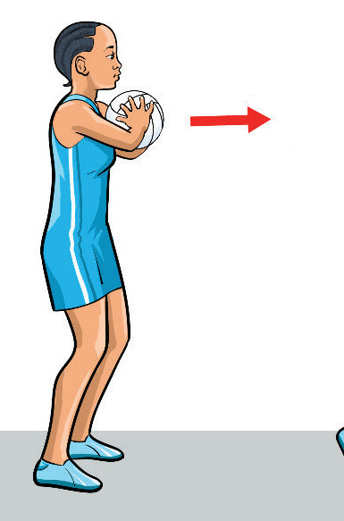
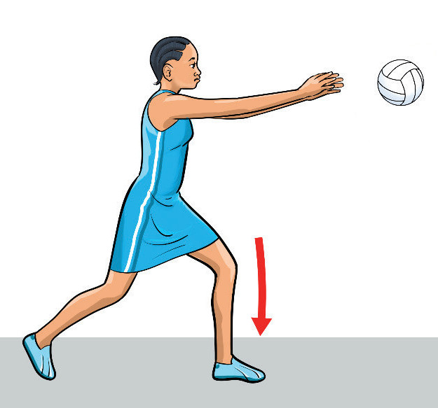

speed and precision, making it perfect for short-range passes.
To practice chest pass, follow these steps:
- (i) Stand with legs shoulder-width apart, slightly bending your knees;
- (ii) Hold the ball with two hands at chest height, as shown in Figure 1.6 (a), to ensure a strong and stable grip;
- (iii) Spread your fingers around the side of the ball and point your thumbs towards the back, with your elbows bent, preparing to push it;
- (iv) Push the ball forward by straightening your elbows, fingers, and thumbs, delivering the ball, and follow-through to ensure accuracy and power as shown in Figure 1.6 (b); and
- (v) Step forward after passing the ball by transferring your weight onto the front foot, helping to propel the ball and maintain balance.
ab


Figure 1.6: Chest pass execution
Bounce pass
A bounce pass is a passing technique where the ball is thrown down towards the ground, bouncing once before it reaches the intended receiver.
The pass is useful for evading defenders as it travels low to the ground and is harder to intercept.
The ball should bounce about two-thirds of the way to the target player, with a controlled bounce to ensure accuracy.
This pass is ideal for passing through tight spaces where
SPORTS STUDIES FORM TWO.indd 7
9/17/25 9:54 AM